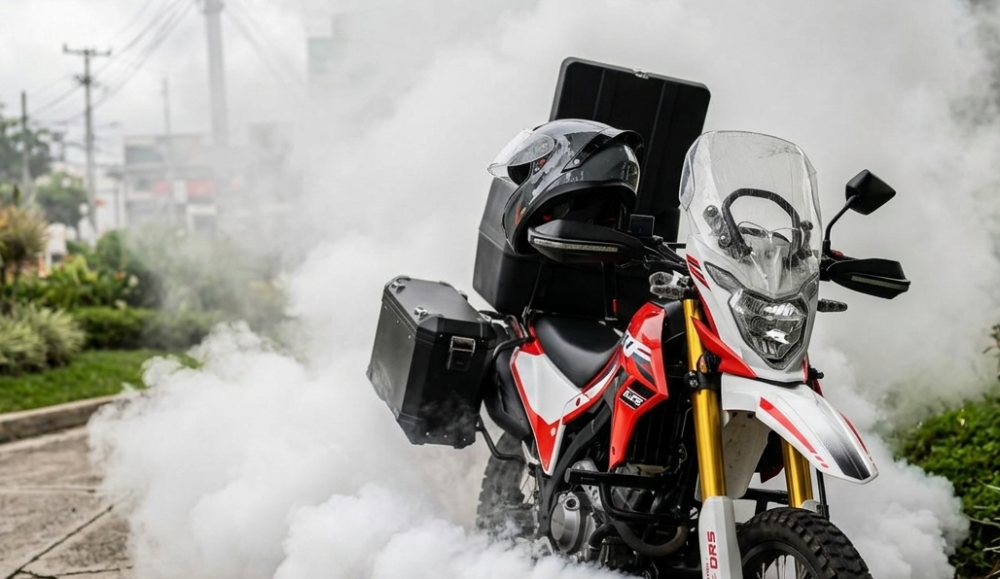
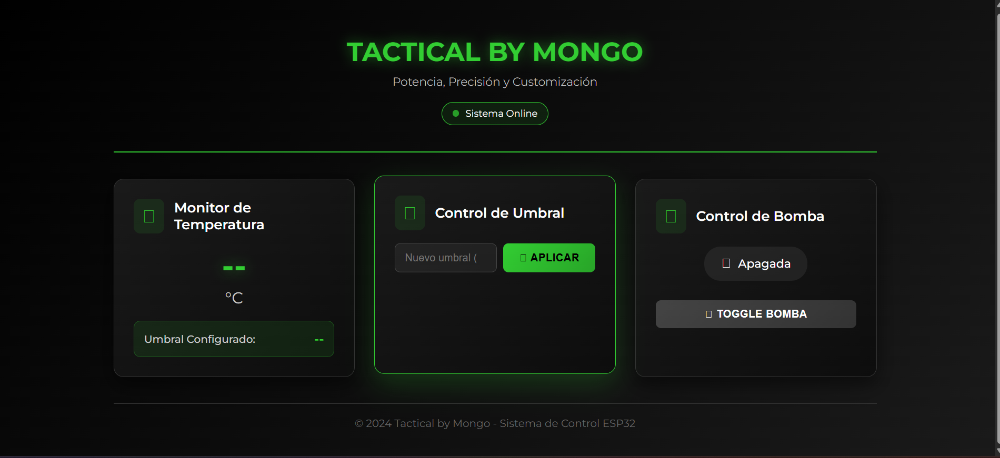

El sistema en imágenes
Documentación visual del proyecto — sistema físico, componentes e interfaz web.


Evolución del proyecto
Idea inicial
Identificación de la necesidad de un sistema de fumigación más eficiente y controlado para uso práctico y real.
Desarrollo del sistema base
Diseño y construcción de la estructura mecánica motorizada: el núcleo funcional del proyecto, desarrollado por mi papá.
Incorporación del monitoreo
Análisis de la zona clave del sistema y definición de la variable a monitorear: temperatura de operación.
Integración del ESP32
Selección del microcontrolador, conexión del sensor de temperatura y configuración del firmware de lectura de datos.
Desarrollo de la interfaz web
Diseño y programación del panel de monitoreo accesible desde el navegador, con visualización de temperatura y estado del sistema.
Sistema mecatrónico funcional
Integración completa de la parte mecánica y la capa digital, resultando en un sistema cohesivo, controlado y presentable como proyecto de innovación.
Próximas iteraciones
El sistema actual es la primera versión funcional de una plataforma con alto potencial de evolución.
Historial de datos
Almacenamiento local o en la nube de lecturas históricas para análisis de patrones operativos.
Monitoreo remoto
Acceso a los datos del sistema desde cualquier lugar, sin necesidad de estar en la misma red local.
Alertas automáticas
Notificaciones por correo o mensaje cuando se detecten condiciones fuera del rango operativo.
Panel de control avanzado
Interfaz más completa con gráficas en tiempo real, historial visual y múltiples parámetros configurables.
Automatización ampliada
Lógica de control más sofisticada integrando múltiples sensores y condiciones de operación.
Escalabilidad
Adaptación de la arquitectura a otros tipos de sistemas o aplicaciones industriales similares.
Mecánica con inteligencia.
Innovación con propósito.
Este proyecto demuestra que la mecatrónica no es solo teoría académica — es la disciplina que permite transformar un sistema mecánico funcional en una solución tecnológica moderna, escalable y con valor real.
.png) Tactical By Mongo
Tactical By Mongo